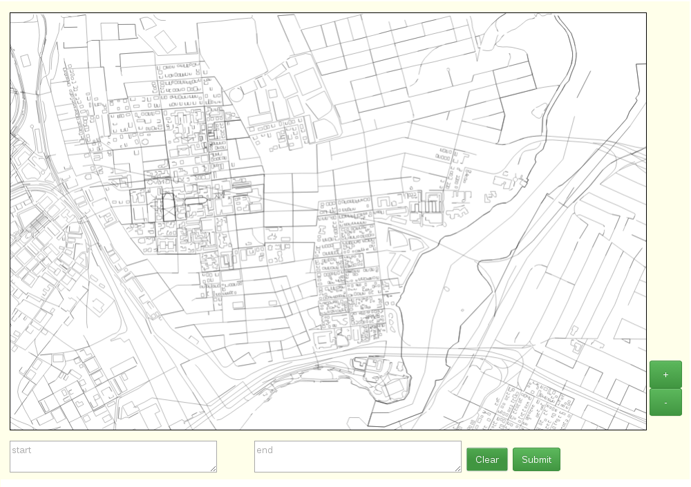
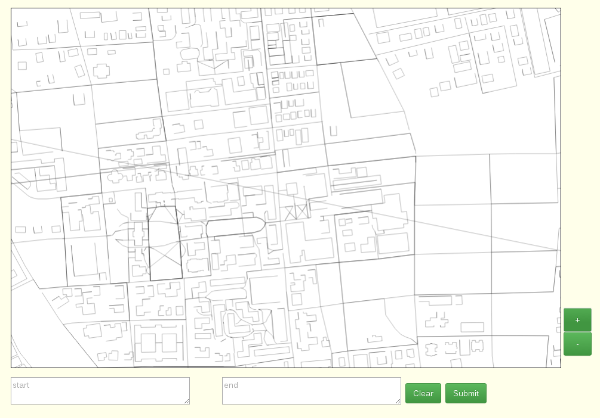
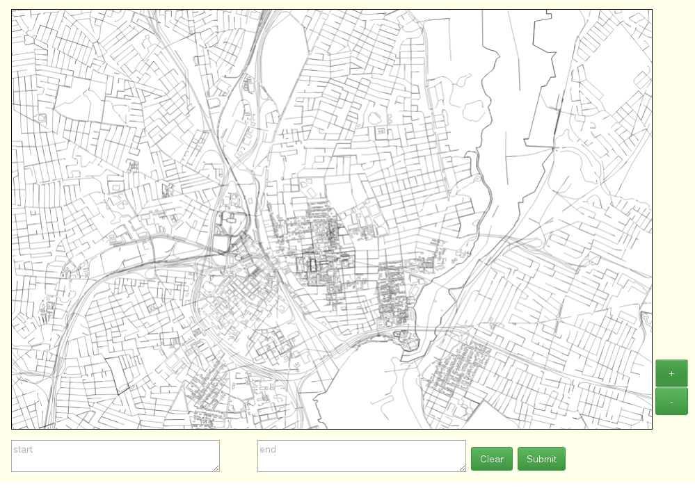
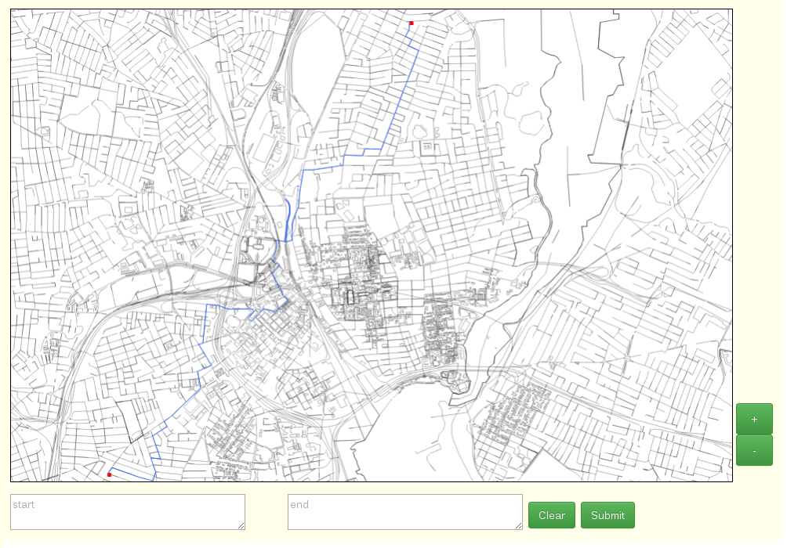
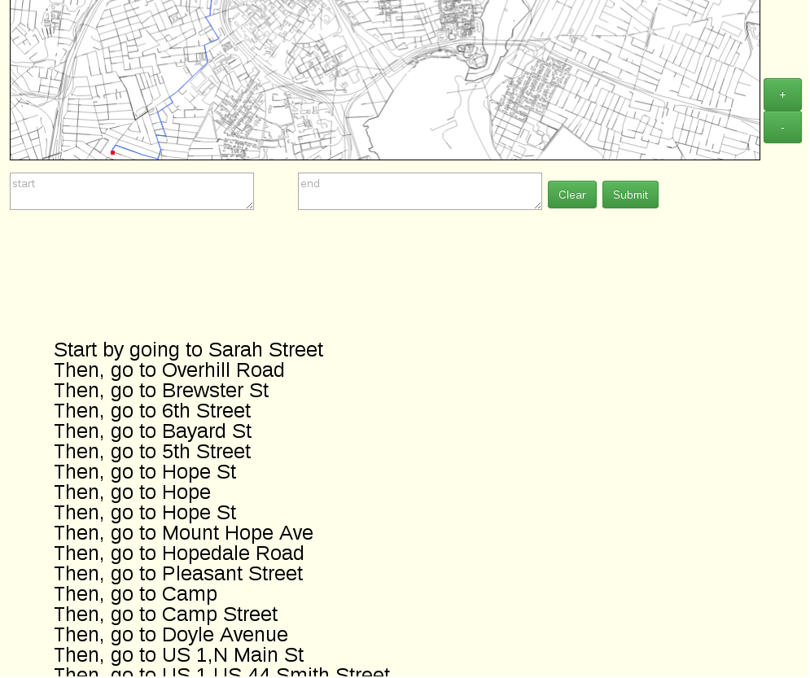
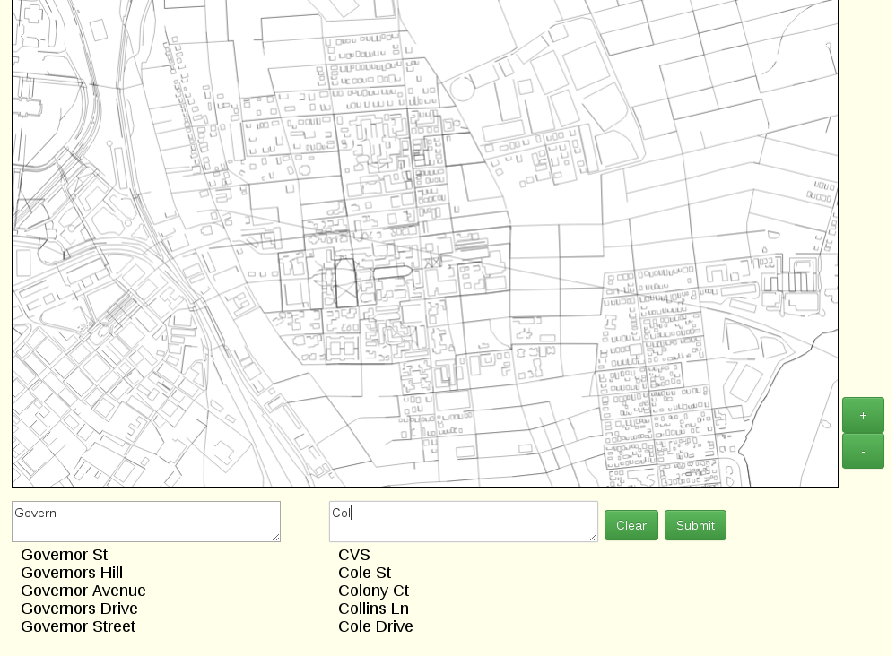
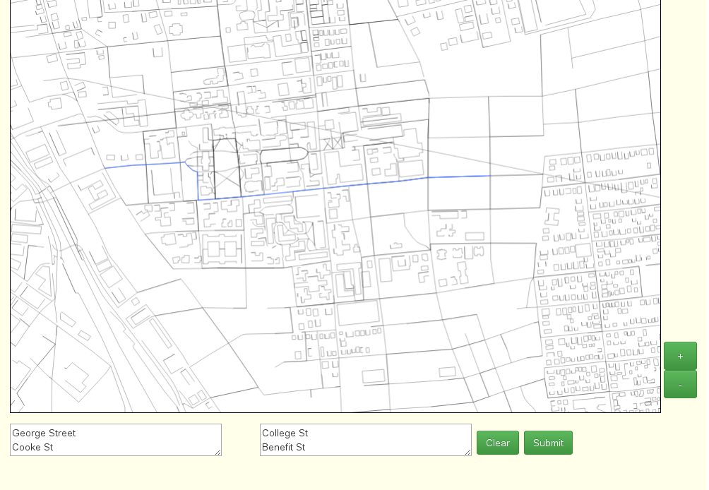

This is a map of Rhode Island centered on the Brown campus. The entire project consists of two parts: the web server and the web client. The server was written in Java and uses Spark to run a local webserver that any browser can connect to. Spark allows programmers to create handlers that are called when reached at a certain URL, which allows the backend to be designed as an API. The client uses Ajax requests to interact with the backend and retrieve information, such as the coordinates of the streets to draw as well path finding requests. The server sends the web client "blocks" of the map to draw, and the client caches these blocks so data only needs to be sent once.

Users can interact with the map in several ways. They can pan across the map by clicking and dragging, and they can zoom in...

They can also zoom out...

And most useful of all, they can click on two points in the map (which are marked with red squares) to find the shortest distance between the two points, which is highlighted in light blue on the map. The algorithm used is an A* search.

In addition to a highlighted path, users are also given turn by turn directions below the map

The user can also enter street intersections directly into the search boxes, which can autocorrect the user's requests. The autocorrect is also implemented natively, stores words in a large trie and uses prefix matching, Levenshtein edit distance and word splitting to generate possible words, and ranks the results with bigram model (a very simple Markov chain that suggests words based on the probability of it coming after a previous word).

Just as with the previous path finding method, entering street names also gives a highlighted path and turn by turn directions.